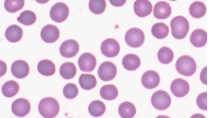
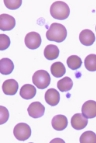
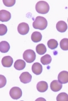
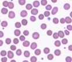
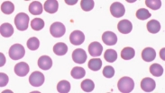
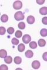
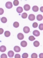

Report on Basic image processing, etc
Report on Basic image processing, etc¶
Learning outcome:
Open and read image files
Perform simple mathematical operations on images
Implement two thresholding techniques
Perform segmentation by choosing the thresholding technique
Count the number of cells in an image using connected components
Task 1: Otsu and HSV Thresholding (5 marks)
Otsu
More Output images seen in Task2.
The formula given in the specs using within-class variance (which is slower than between class).


Figure 1 – w, mean, variance, within-class variance from w0 and w1
(Mean and variance here are the expected value and variance of the discrete random variable)
Above formula is translated into the code below:

Where t is the threshold (an intensity value in [0, 255]), w0 and w1 is the probability of two classes of each intensity pixel).
So, threshold t split the colour pixel into two classes, one ranges from [0, t - 1], the other from [t, 255]. Then w, mean, variance is calculated based on the formula above. (grayscale zero (black) represents the background, and grayscale 255 (white) represents the foreground).
The goal is to minimise the weighted within-class variance, which is the sum of w0*var0 + w1*var1.

Figure 2 – Input and output image with Otsu
HSV
The threshold for HSV is found by observing the HSV image of the original image, and the HSV colour space below. Based on the image, saturation could be used to separate the foreground and the back gourd.
Then the threshold for saturation is tunned by the output image.
 

 **
**
Figure 3 – HSV colour space, input, HSV, HSV threshold images
Task 2: Counting the number of cells (5 marks)

My approach for median filter is to find all neighbour of current pixel within the kernel size range and then change this pixel value to the median value of its neighbour.
The two-pass connected component follows the instruction in the assignment requirement. In short, first pass labels cell based on neighbour cells (up, down, left, right direction), second pass reassign labels based on the minimum value of existing labels. More Explanation is stated below.
Firstly, no neighbour condition is defined as either the index will be invalid in the 2D array or the neighbour has not yet been labelled.
Secondly, minimum label assignment is coded such as it is ranged from [0, len(equivalent set)] (the background is label as 0.)
Thirdly, an equivalent set is coded as a list of list structure where each list element is disjointed.
Once a new list is added, it is first checked if it contains an element that other lists have, if so, those lists will be merged into one and then the old ones are removed.
Moreover, area (number of pixels) for each label is counted during the second pass to improve efficiency.
Then, the process of counting cell starts.
Median is chosen for creating threshold as it could ignore outlier.
A hard-coded threshold such as area = 2000 for overlap cell is not used for the purpose of generalisation.
First, the data is normalised by reducing overly small cells. It is filtered by a threshold of 0.5 * median(areas). (here assumes extremely large cell is not an outlier but still a cell)
Then the minimum area for individual cell threshold is set as 0.65 * median(normalised_areas). 0.65% of an individual cell (partially shown) is considered large enough to be taken into account.
The maximum area (overlapping area) for two cells is set to 2 * median(normalised_areas). This is because it is found that the overlapping cell is smaller than the sum of two individual cells and normalised_areas is smaller than the sum of two individual cells due to a few outliers.
Now, cells that have min_area < pixel area < overlap_area is considered as one cell where those that has pixel_area > overlap_area is counted as two cells.
Result for c1, c2, c3, c4 shown below
   
Figure 4 - c1, c2, c3, c4 input images


Figure 5 – c1, c2, c3, c4 output images
Benchmark
C1 |
C2 |
C3 |
C4 |
||
|---|---|---|---|---|---|
Cell number |
Visual/actual |
55 |
36 |
25 |
30 |
predict |
51 |
35 |
24 |
29 |
|
overlap |
actual |
3 |
0 |
1 |
0 |
predict |
1 |
0 |
0 |
0 |
Where the last list is the area for each label (filtered). It shows that three labels are greater than the max area threshold which matches with the image.
Above analysis comes from below (from c1 to c4)